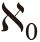

我们对数学与现实之间关系的探讨已经接近尾声，现在，我们不可避免地要提到一个现象。有人认为，至少物理学领域目前正处于本末倒置的状态——数学占据了主导地位，长此以往，很容易导致令人不安的后果，即科学家的研究将越来越难以被普通人理解。
物理学家尤金·维格纳讲过一个故事。两名昔日中学好友在一起聊天，其中一个人是统计学家，正在自豪地介绍自己的工作。他拿出一篇介绍人口变化规律的论文，然后告诉他的朋友，根据某种分布类型（高斯分布）可以预测人口将发生哪些变化。在这个过程中，他不可避免地要解释这篇论文里出现的大量晦涩难懂的数学符号。
朋友认为统计学家在论文里描绘的那幅图其实是一堆抽象数字的直观表示，对此他产生了怀疑：怎么能用这幅图来预测一群人，一群活生生的、有自己想法的个体的行为呢？但是，他发现这些数学符号中还隐藏着更加令人难以置信的东西。他指着论文中的一个符号，询问它的含义。统计学家说：“这是π。你应该知道π的含义，就是圆的周长与直径之比。”朋友摇了摇头：“原来你真的在捉弄我。人口怎么可能与圆的周长有关呢？”
维格纳是在一个讲座的开场部分讲述了这个故事的，目的是解释“数学在自然科学中不可思议的有效性”。他认为，这种不可思议的有效性表现在两个方面。第一，数学可以出人意料地应用于某些看似不相关的领域（例如，在研究人类行为时，π的出现就会令人感到奇怪）。第二，我们不能因为这些数学概念具有相同的规律，就断言这些数学概念与现实之间存在某种联系。这可能只是一种巧合，而我们在实验时正好碰上，因此效果不错。但是等到明天，或者当我们将它应用于另一种情况时，它也许就不适用了。
现在，我们可以回过头来看看数学的诞生过程。在本书前几章里我告诉大家，数字在刚开始的时候是用来表示实物的。最初，数字可能与计算山羊数量的手指相匹配，然后又与计算其他事物数量的手指相匹配，这可能是数字的第一个抽象化过程。接着，数字进一步抽象化，变成了表示手指的符号。然而，在这个阶段，数字与实物之间的关系仍然非常清楚、直接。随着数学的发展，负数使数学与现实之间的关系渐渐疏远（负数就相当于从整体中取走的物体的数量），随后数学领域又引入了虚数、

等数字。维格纳说：大多数更高层次的数学概念……被精心设计出来，这是因为这些数学概念是数学家展示自己的创造力和对形式美的品鉴能力的理想平台。
我们看到数学家正在不断突破可能性的限制，尽可能地拓展数学的应用领域，提出了一系列在逻辑上不会产生冲突的概念。即使搭建而成的完整结构在现实世界中没有实用价值，也找不到与之匹配的对象，他们也乐此不疲。与此同时，他们还为自己的所作所为感到震惊、困惑。之所以有这种感觉，是因为这些数学家（他们也是凡人）在创造一个个小世界，并取得数量众多而且和谐统一的成果（尽管有时候需要修改规则，例如将1从素数集中剔除）。与此同时，这个过程也会让外行人感到困惑，因为他们认为有的成果除了可以用来炫耀自己的智商以外毫无意义，却仍然有人愿意耗费时间和精力，从事这方面的研究。
但是，纯粹以实用性来引领研究方向是不切实际的，科学研究如此，数学也如此。我们必须赋予数学家做实验的自由，因为我们不知道数学上含混不清的辩解之词何时会变成实用的工具。这个特点让那些政客以及负责为科学和数学拨付研究资金的其他局外人感到特别为难，他们觉得自己划拨的那些钱款似乎是供人“玩乐”的。如果拨款对象从事的是纯粹的数学研究，就等于为他们研究那些不切实际的抽象概念买单。但是，我们根本不知道这些概念什么时候会发挥作用。
数学家和科学家就像收藏家一样，他们如饥似渴地把那些看似无用的东西收藏起来，希望有一天这些东西会变成无价之宝。一旦如此，它们就会产生深远的影响。20世纪初，数学界以外的人几乎都不清楚非欧几何的发展前景——当然，爱因斯坦不在此列。除了可以在地球的弯曲表面上确定航行方向以外，非欧几何似乎与现实没有任何联系。但是，爱因斯坦创立的广义相对论却离不开它。
数学家在研究数学时无拘无束，根本不需要考虑其是否与现实有关。实用价值不应该成为评判数学研究的基本标准，就像我们不能根据载人飞船太空探索的副产品（为把人类送入太空所投入的智力和财力给社会带来的额外好处）的多少来评判这项活动一样。在这些副产品中，有的是实实在在的好处，但影响力通常比较小，有的则是不合逻辑的建议。人们常常罗列出GPS（全球定位系统）、气象卫星、空间望远镜等，作为支持载人航天活动的理由。但是，实际上，无须花费大量财力，以及执行各种危险的太空任务，人们也可以得到这些副产品。
不仅如此，根据副产品多少进行评判有时候还会得出彻头彻尾的错误结论。我曾经看过，有人认为广泛用于煎锅、水管、尼龙搭扣、个人计算机等方面的不粘材料聚四氟乙烯要归功于美国国家航空航天局。事实上，前两项应用完全是普通研发工作的成果，只不过在几十年之后，美国国家航空航天局碰巧应用了这两项成果。美国国家航空航天局的确想减小计算机的体积，以便将它装进太空舱中，但是个人计算机发展的最大动力绝对不是美国国家航空航天局的需要，而是潜在的大规模市场。就效果而言，大规模市场的推动力远远大于小规模的专业应用。因此，我们必须忘掉这些副产品带来的“好处”，专心致志地考虑载人航天飞行的真正目的：它既是一项光荣的冒险活动，又有可能为人类带来生机。
与之类似，在评判数学家的抽象数学研究时，我们也可以列举出纯粹数学在应用方面的诸多“副产品”，但是大多数数学家从事相关研究却另有目的。过于关注实用价值，可能不利于取得重大突破。数学家希望迎接挑战，乐于享受在精神世界建功立业的乐趣。但是，物理学家通常会受到现实的羁绊，无法在梦想的国度里长时间地遨游。理论上，我们好像也可以创立一门专门研究纯理论的“异种物理学”（或许真的有这样的物理学，但是我电脑上的拼写检查程序却认为这个单词不存在）。事实上，物理学使用的很多模型都非常简单，与现实之间几乎没有多少相似之处，但是物理学研究的目的是预测并解释自然界的各种行为。在借山羊时，人们会用手指表示山羊的数量。同样，研究自然的物理学也不能脱离与自然的联系。
想要更好地理解物理学的研究内容，必须先了解模型的概念。只要有机会，我就会讲述一个在科学家群体中流传的古老笑话，从中一方面可以清楚地看出科学模型的本质，另一方面可以看到内行人和外行人对科学的不同理解。听到这个笑话后，外行人的反应最多是礼貌地一笑了之。笑话涉及的三个人分别是遗传学家、营养学家和物理学家，他们正在讨论赛马的培育方法。遗传学家说：“我们必须根据马的特性选择合适的马匹开展育种工作，多代之后才能培育出最优秀的赛马。”营养学家听后说道：“不对，更重要的是看马在成长过程中营养是否均衡，能否增强肌肉。”物理学家听后摇摇头说：“我们可以假设赛马是一个球面。”
简单化的模型的确可能引人发笑，但其中并不是没有道理可言。上学期间，我一看到物理题目中出现“假设没有摩擦力和空气阻力”就感到十分生气，觉得他们在骗我，因为摩擦力和空气阻力肯定存在。既然可以这样假设，那么我们也可以“假设我知道正确答案”啊！然而，这也说明了一个事实：数学家在数学世界中拥有至高无上的控制权，而物理学家必须更注重实际。我们以身体为例。物理学在研究这个我们都非常熟悉的对象时，必须使它简单化，而不是研究一个个原子。原子是量子，具有概率特性，而且原子的数量非常庞大，我们身体里大约有1027个原子。任何人都不可能合理地预测每个原子的行为，因此我们只能将所有原子视为一个整体，并在此基础上建立模型。
鉴于我们周围的世界无比繁复，物理学竟然可以做出各种预测，这实在是一件匪夷所思的事。但是物理学真的做到了，其主要手段就是建立简单化的数学模型。在理论上，这些模型不一定真的有用。但是，我们发现宇宙万物之间具有某种协调性，从而为物理学家提供了某种帮助。如果被我们视为基本常数的值（例如光速）不断变化，物理学就会遭受灭顶之灾。所有的物理系统都会受到灾难性的打击，我们甚至也无法预测任何事物的发展趋势，因为事物发展将表现出一种茫然无序的情况。
我们通常认为，地球上的规律同样适用于其他地方，但现实似乎并非如此。比如，我们知道物体在月球上比在地球上轻得多。因此，机器在月球上的性能也会大不相同。但是，牛顿的一个伟大创新就是大胆地假设引力是一个普遍现象，他认为月球上的引力作用与地球上的一模一样。截至目前，除了几个可能的例外情况，这个假设似乎并无不妥之处。我们无法证明这是一个事实，但是，如果我们不做出这样的假设，科学研究的所有努力都将毫无意义。
值得庆幸的是，很长时间以来，这种假设经受住了考验，这就意味着我们可以利用数学模型来研究现实，并且有可能取得令人吃惊的成功。在这个过程中，我们常使用不变性原理（简而言之，不变性原理认为我们建立的物理“定律”适用于所有时空）。
尽管科学的不变性不受实验操作者的影响（实验者的性别、年龄或种族不会影响实验结果），但并不是所有“实验”在完成质量上都是相同的，因为实验者采取的控制措施各不相同。然而，其中的道理并不十分明显。那些热衷于顺势疗法，或者认为自己对电磁辐射敏感，或者相信自己能看见鬼魂的人有时迷惑不解，原因就在于此。科研人员通常会花大力气将某个现象分离出来，以便从这个现象中提取数据时不会受到外界因素的影响。这在实验室环境中是可以做到的，但是一旦离开实验室，效果就会大打折扣。
比如，2014—2015年第二代宇宙泛星系偏振背景成像微波望远镜的发现，一度被视为引力波，但是后来人们发现那些数据其实受到了银河系中尘埃的影响。任何天文学和宇宙学观测都有可能受到意料之外的干扰，我们的日常体验亦如此。科学界有一句老话：“传闻再多，也不是数据。”即使我们有某种亲身经历，也不意味着大脑对这些经历的解读就是有效的科学模型。即使我采取顺势疗法之后感觉很好，我也无法判定自己是在这个疗法的帮助下恢复健康的，因为我没有合适的比较标准。我感觉不错的原因可能有很多种。最有可能的原因是我的健康状况真的有所好转，也有可能只是我的感觉很好，但身体状况并没有真正得到改善。也就是说，我们必须清醒地认识到，不变性假设并不意味着我们可以把道听途说当作科学证据。
尤金·维格纳指出：“自然律只在特殊条件下，即世界现状的所有相关决定因素均为已知时，才能用于预测未来。”一般而言，这个条件永远无法实现。我们无从了解我们所面对的所有条件，因此我们只能依赖假设和简单化处理。这样一来，我们使用的模型与现实越来越脱节，得出不正确结果的可能性也越来越高。
即便如此，我们仍然可以看到，在某些领域，研究人员没有依靠与现实相匹配的模型，而是借助抽象数学做出了与现实吻合的预测，从而证明数学是一个效果惊人的工具。维格纳以兰姆移位（原子中两个电子能级之间的微小差别，这一发现推动了量子电动力学的发展）为例，说明了这个问题：“由贝特提出、施温格创建的兰姆移位量子理论是一个纯粹的数学理论，它唯一的直接贡献就是证明存在某种可测量的效应。事实表明，实验结果与理论计算的吻合程度超过千分之一。”
尽管这些方法取得了成功，但这并不能保证这些模型一定可以发挥作用。建立模型时，我们总会依赖自己的经验。比如，在研究物理学的两大支柱——始于20世纪的量子论和相对论时，人们依赖于两种不同的数学结构，但是这两种结构无法融合。几乎所有的物理学家都认为肯定有办法让它们融为一体——要么修改其中一个理论，使其适合另一个理论的数学结构，要么设计出同时适用于两大理论的新结构。但是，现有模型很有可能就是效果最好的可行模型，而且它们永远无法实现融合，“万能理论”也永远不会出现。
我们并不一定非得建立一个可身兼数职的普适型数学系统。尽管有人会提出相反的观点，但我仍然认为宇宙的本质不是数学。只不过，某些（并不是大多数）数学内容的基础是现实世界的观察结果。实际上，数学是一个功能强大的工具，可以帮助我们建立宇宙模型，而模型一定有其局限性。在这里，我要再次引用维格纳的话：“我们根本不知道我们的理论为什么如此有效，因此，它们的精确性并不能证明它们的真实性与一致性。”维格纳有力地指出，即使基于数学的理论可以做出有效的预测，也不一定意味着它具有某种价值。
这个观点似乎非常奇怪。既然数学可以有效地预测未来，为什么否认它是现实世界的精确表达呢？原因在于我们已经发现的一个事实：几乎所有的物理学内容都离不开大量的简单化处理与假设。在我们建立模型时，宇宙黑箱里真实存在的很多元素都有可能被我们忽略。举一个非常简单的例子，下面是一个预测明天早晨太阳是否会升起的计算机程序：
如果年份<3000
输出“太阳将会升起”
否则
输出“太阳不会升起”
结束
这其实是一个数学模型，但大多数人更熟悉计算机程序的逻辑结构，而不熟悉数学的符号结构。我可以告诉大家，在公元3000年之前，这个模型的预测结果都不会有任何错误，但是到了公元3000年，它就会出错（我希望如此）。你也许会说，我输入的具体日期与现实之间没有任何联系。但是，从一定意义上说，这就是我举这个例子的目的所在。我们也不知道自己输入科学模型中的那些常数、公式是否与现实有关联，我们只知道其预测结果与我们观察到的现实非常吻合。但是，这些模型的内容与现实之间的联系，不一定比我编写的那个高度精确但是毫无价值的计算机程序与现实之间的联系更紧密。
本书谈到了很多了不起的数学家所提出的崭新的、有影响力的数学概念，其中一些概念是作为纯粹数学的推论被提出来的。例如，16世纪，吉罗拉莫·卡尔达诺提出了虚数的设想，当时他并没有考虑虚数会有什么实用价值。但是，在科学家和工程师的手里，虚数变成了一个功能强大的工具。数学家抱着开发一个新的实用方法的目的，有意识地开发出一种数学方法的情况并不多见，其中最显而易见的例子就是微积分的前身——牛顿的流数术。
为了揭示数学的本质，了解数字是否真实存在，我们可以把数学家视为古时候的铁匠。铁匠的任务是为社会提供工具，为其他行业制造必需的设备。但是，他们也是艺术家，有时还会别出心裁，用金属打造一些用途不太明确的物件。与铁匠相似，数学家也为科学研究提供了大量工具，尽管他们可能对由纯粹数学构成的抽象世界更感兴趣。
借助数学，科学已经取得了一系列成功，但是我们有理由相信人们在考虑数学的应用性时步子可能迈得太大了。美国物理学家理查德·费曼曾经把那些伪科学家徒有其表的科研活动称作“草包族科学”。但我认为用这个词表达另外一种意义，效果可能更好。据称，20世纪上半叶，美拉尼西亚群岛上的居民由于货机崇拜而将飞机模型与真正的飞机混为一谈（对于货机崇拜这个现象，历史学没有确定的结论，反而是神话传说表现出一副言之凿凿的样子）。我认为，有些科学家同样把他们的模型与现实混为一谈了。
数学一度被视为帮助我们了解、解释物质世界的工具，但它现在已经成了一个独立的实体。在用数学推演出结果之后，我们会绞尽脑汁地让它们与观察结果一致。例如，数以百计天资聪颖的人正在研究弦论，但是他们的努力很有可能会徒劳无功。物理学教授萨宾·霍森菲尔德称：“在这个过程中，很多物理学家开始相信，仅凭纯粹的（数学）逻辑和一定的美感，就有可能在没有观察结果的前提下提出一条理论。他们肯定认为他们的大脑和宇宙之间存在某种神秘的联系，仅凭思考就可以发现自然律。”
当然，物理学不是科学的全部，但是在运用数学工具这个方面，其他学科仍然不及物理学。我们已经知道，那些从事心理学等软科学研究的人往往不能得心应手地使用统计学等工具。而且，由于这些工具看似简单，但是常常与直觉相悖，因此他们经常会得出一些错误的结果。有些科学领域还需要进一步加强对数学的了解，以便为观察结果建立合适的模型。但是对于物理学而言，花在“集邮”上的时间或许应该多一点儿，而躲在象牙塔里钻研数学的时间或许应该少一点儿。
智能手机等日常设备应用了量子技术，其背后理论所涉及的数学知识是99%的人都无法理解的。但是，我们同样需要通过加强对实验的倚重、减弱对数学理论的依赖，建立一些不同的、更容易解释的模型。归根结底，现实世界的科学模型并不全是数学层面的，有的模型还需要反映我们对周围世界的观察结果，以便帮助我们更好地理解现实。建立模型绝对不止一种方法。
统计学家早就警告我们，相关性不等于因果关系。两个数据集在一段时间里同时发生变化，并不代表它们之间存在因果关系，也不代表未来它们会继续保持这种相关性（要确保相关性持续存在，两者之间就必须存在因果关系）。“二战”之后，英国香蕉进口贸易与妇女怀孕就是有相关性但是没有因果关系的一个经典例子。当时，香蕉进口量增加，英国怀孕妇女的数量也会增加，反之亦然。但是，任何头脑清醒的人都不会认为妇女怀孕的原因是香蕉进口贸易（事实上，这两件事可能都与第三个因素相关）。一般而言，我们遇到的相关性都远没有这个案例那么荒诞不经，因此我们更有可能受到表象的迷惑，误以为存在因果关系。
不存在因果关系的相关性案例不胜枚举，有一个网站甚至还将这些相关性案例列举出来。这个网站告诉我们，在10年时间里，美国上吊自杀的人数与美国政府拨付给科学研究、空间探索和技术发展等方面的经费之间存在显著的相关性；同一时期，美国缅因州的人造奶油人均消费量与离婚率之间存在显著的相关性。事实上，这些相关性显然毫无意义。然而，如果新闻节目主持人告诉我们政府的新政策导致股市下跌，我们可能根本不会感到惊讶，尽管这种因果关系也只是一个假设而已。
科学家喜欢在实验室条件下做实验，原因之一就是他们在实验室里可以控制很多在“自然环境中”无法控制的可能变量。在实验室中，因果关系比较容易确定，但是在现实中，发现因果关系的难度要大得多，因为诸多干扰因素会把某个现象的真正原因隐藏起来。
正因为因果关系难以确定，所以人们很难判断不同的饮食方法到底会对人类健康产生什么影响。例如，科学家可能会注意到大量食用西红柿的人患心脏病的概率低于普通人，但是我们不能就此认为只要多吃西红柿就一定能改善我们的健康状况。我们长期生活在一个异常复杂的世界里，这与控制措施严密的实验室不同。我们将发现，大量食用西红柿的人与那些常吃垃圾食品的人还存在很多其他不同点，其中最重要的不同点或许与西红柿根本没有关系。
如果我们可以对几千人做实验，控制他们的饮食，那么几个月之后，我们或许可以进行严谨的科学分析。但是，事实上，大多数饮食结构研究都需要综合考虑一系列的差异，操作起来难度很大（往往还需要依赖实验对象极不准确的自我报告），因此很难保证实验结果的精确性。
在实验室里工作的物理学家无须面临如此恶劣的条件，但是在难以实施控制的科学领域（例如宇宙学），研究人员却会遭遇同样的问题。在实验室中，科研人员也可能遇到异常复杂的情况，或者需要通过非常曲折的方式进行间接观察。例如，在大型强子对撞机项目中，探测器提供的探测结果就非常复杂、极其混乱。在这种情况下，我们很有可能受到诱惑，忍不住使用某种数学方法，原因是这个方法“似乎是正确的”，它给人一种难以抗拒的美感，而不是因为观察结果要求我们必须采用这种数学方法。结果，虽然我们的数学模型可以产生大量与实验结果相吻合的数据，但是模型本身却与现实没有任何联系。对数学的过分依赖，已经引起了若干当代物理学家的关注。
在科学史上，我们可以找到大量模型与现实脱节的实例，例如，托勒密天文学中使用的本轮系统。这套系统的基本原理是，根据观察结果建立相匹配的数学模型，并对其进行完善。这套系统的应用时间为1 300多年，而且由于不断完善，它与观察结果的吻合度一直非常高。但是，使用这种圆周旋转模型来描述行星的运行方式的做法，并没有充分的科学理由。这个模型基于一个错误的物理假设（地球是宇宙的中心），因此它无法逃脱覆灭的命运。毕竟，即使数学工具给出的答案与观察结果高度吻合也无济于事，因为仅仅得到数学的支持是不够的，数学不可能拥有决定一切的权力。
数学鸠占鹊巢，把实验挤到了次要位置，这让在著名的圆周理论物理研究所担任主任一职的尼尔·图罗克难以接受。图罗克曾发表了下面这番言论：
自然为我们提供了这些不可思议的线索，但是我们并没有理解其中的含义。事实上，我们正在做着南辕北辙的努力，导致我们的理论越来越复杂、越来越不自然。我们搬来了更多的场、维度、对称，想尽一切办法解决这个问题，却没有解释最基本的事实。
实际上，图罗克批评的是人们利用数学来推动科学研究这个现象。从本质上看，数学研究的是真理和事实，这是数学与科学的区别之一。在数学系统里，事实不容置疑。例如，在传统算术中，2加2一定等于4。这是算术法则规定的事实，是由这套数学系统的本质决定的，任何人都不可能找到证据驳斥它。科学家兼科幻作家艾萨克·阿西莫夫说：“随着时间的推移，人类活动的所有领域几乎都会发生显著的变化，这些变化可以被视为修正或者拓展，又或者兼而有之……现在，我们可以看到数学到底有什么独特的地方了。数学这个领域从来没有进行过重大的修正，所有的改变都是拓展。”
在数学领域，我们必须注意语言的精确性。如果我们换用另一个数基（比如基数为3时，2加2等于11），或者使用第1章里讨论的算术法则（数字不是一直往上增加，而是像钟面一样，达到最大值之后就会从头再来），那么2加2完全有可能得出不同的结果。对于数学家而言，传统算术与钟表算术不存在谁更“真实”的问题，尽管一种算术适用于所有传统实物，而另一种则只能用于处理周期性事件。在传统算术的特定系统中，我们绝不能背离在该系统中发挥基础作用的所有事实。
然而，科学与数学在这方面有所不同。当科学家讨论137亿年前使宇宙开始膨胀的那次大爆炸时，他们描述的内容与我们通过书写2 + 2 = 4这个等式表达的内容有所不同，因为后者是一种事实，而宇宙大爆炸则是根据当前数据建立起来的最可靠的理论。在我创作本书期间，当得起“最可靠”这项殊荣的大爆炸理论至少被修改过三次，每次都是因为有数据证明当前版本是错误的。在未来的某一天，大爆炸理论甚至有可能被全盘否定，并被一个更可靠的理论取代。
科学一直都是临时性的。科学的目的不是寻找绝对真理，科学的核心要素也不是事实，但这并不是说事实在科学中不重要。科学研究中涉及大量的事实收集任务，也就是遭到卢瑟福诟病的“集邮”工作，部分原因在于很多工作不过是贴上“已成事实”这个标签。很多事实都属于可观测事实，包括我在打字时会使用一个键盘、我的计算机需要电源等事实。当科学提供解释性理论时，我们必须清楚，此时事实已经离我们远去了。比如，当我说光是一种波、一束粒子流，或者量子场的波动时，我描述的其实不是光，而是一个数学理论，或者是在进行类比。我们可以说光或者原子是存在的，也可以创建理论描述它们的本质或者作用原理（因为它们的规模及作用环境与我们可以观察的宏观世界大不相同），但这两者并不是一回事。
科学家经常忽略甚至忘记科学与真理之间的间接关系，或许是因为这种关系会造成某种危险，让人们以为所有的想法和理论在重要性方面都不相上下。因为我是一名科普作家，所以经常有人向我介绍各种各样的理论，甚至宣称他们已经证明爱因斯坦的相对论是不正确的。还有一些人根本不相信科学，而是对巫术深信不疑，坚信能量可以无中生有，坚信顺势疗法可以治病。但是，在面对多种可能性时，科学没有采取一视同仁的态度。所有人都可以对爱因斯坦的观点提出质疑，但是就目前而言，相对论取得了非常好的效果，除非有新的令人信服的证据可以证明某个理论与实验结果或宇宙观测结果的契合程度更高，否则人们不会转而接受其他理论。要彻底推翻科学，用巫术取而代之，需要更有说服力的数据。
有人认为科学就是数学，或者数学就是宇宙的本质。尽管其中不乏才高八斗、智力超群之人，但是我认为，从数学与科学本质上的不同可以看出他们都错了。这两个学科，一个学科（数学）包含一系列事实，我们可以根据我们制定的法则确定它们都是事实；另一个学科（科学）则涉及一系列模型和理论，我们可以利用数据测试这些模型和理论，但是绝不可以称之为事实真理。
在确定数学这门与现实世界脱节的学科应该被赋予的地位时，我们需要考虑一个非常重要的因素。在脱离现实的那个绚丽的世界中，数学家可以编织神奇的魔术，以数学为基础创造出所有事物，但这并不是科学研究应用数学工具的真正目的。我们在第2章提过的数学家理查德·哈明说：
使用数学工具时，我们都会有所选择。数学工具不是通用的。在发现标量不适合表示作用力之后，我们就发明了矢量这个新的数学工具。接着，又发明了张量……我们根据具体情况选择不同的数学工具，因为同一个数学工具不可能适用于所有情况。
科学已经取得了辉煌的成就，而且未来的前景更加光明。数学也已被证明是一个功能强大的工具，可以帮助我们建立宇宙模型，还将继续扮演强大工具的角色。在运用得当的情况下，数学仍然是帮助我们理解物理学基本原理、探索宇宙奥秘的最有效方法，但这并不意味着我们可以滥用这个工具。科学界还需要注意另外一个同样重要的问题：不可将模型与现实混为一谈，而要时刻牢记数学世界别有洞天，有时候它像一面镜子，能把现实世界的情况准确地反映出来，但这并不意味着它就是现实。像爱丽丝那样透过镜子就可以造访的数学镜像世界是不存在的。
某些数字和数学过程毫无疑问是真实的，至少与现实世界的真实物体和行为存在一一对应关系。自然数，即非负整数，肯定源自物理对象，并且与真实物体一样遵循相同的算术法则。人类花费了很长一段时间，才为负整数奠定了同样的理论基础，我们可以在计算电荷的过程中看到它们的身影。随着数学的进一步发展，数学与现实之间的差别越来越明显。例如，虽然分数和几何在现实世界中可以找到与之匹配的对象，但是它们高度精确，这与现实世界的混乱状况迥然不同。我们栖身的这个世界就像柏拉图的山洞一样，不可能找到线条宽度为0的几何图形，而且，由于现实世界是由原子构成的，我们也无法完全等分蛋糕。
诚然，有时候我们可以把某些东西分成精准的几等分，例如钱，25美分就正好是1美元的1/4。但是，这是因为钱从本质上看是量化的，有现成的分割方法，因此我们可以使用分数。然而，这种办法需要付出数学成本。我们可以精准地得到1美元的1/4，但是我们没有办法精确地得到1美元的1/3。尽管其数学表达非常简单，但是现实中根本不存在这个概念。
本书从数学专业人士的角度告诉大家，分数和几何学与美轮美奂、光怪陆离的数学世界相比，不过是冰山一角。数学世界无比广袤，即使数学家穷尽毕生精力，也很可能不会有任何真正的发现。但是，有的数学结构与数学机制的确与现实有相似之处。这些数字和程序也许并非真实存在，但是它们仍然可以帮助我们找到问题的答案。
尽管数学可以脱离现实，但是我们必须让实用数学建立在物质世界的基础之上，使科学可以被所有人接受。那么，数字到底是不是真实存在的？我认为，数字从最基本的意义上看确实是真实存在的，但是大多数的数学内容则与之相反。数学就是一个梦幻世界，有时与我们身边的这个世界非常相似，是这个世界的完美反映，可以作为我们理解现实世界的工具。但是，所有的数学工具都必须恰当运用。只要我们（以及科研人员）牢记这一点，就不会犯下大错。